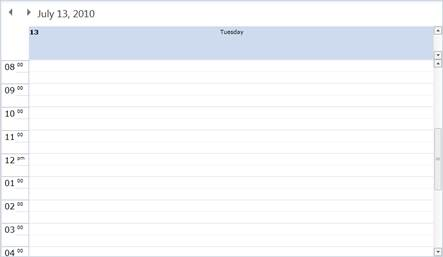
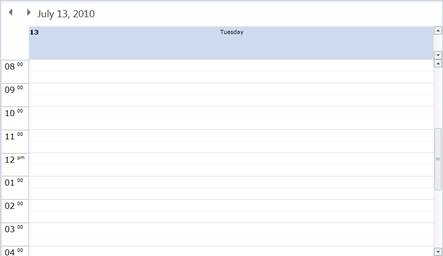

You can show / hide the time line hour division using the TimeLineHourDivisionVisibility property. By default, the value is Visible.
|
[XAML] <Schedule:Schedule x:Name="schedule" TimeLineHourDivisionVisibility="Collapsed"/> |
The following screenshots shows it:

Figure 39: TimeLineHourDivisionVisibility is Visible

Figure 40: TimeLineHourDivisionVisibility is Collapsed